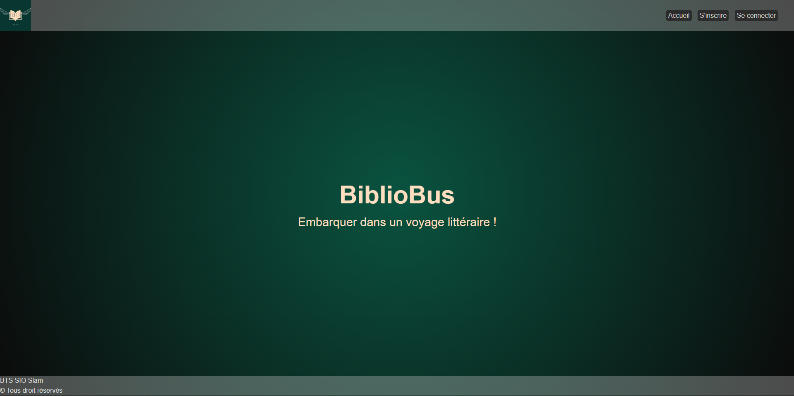
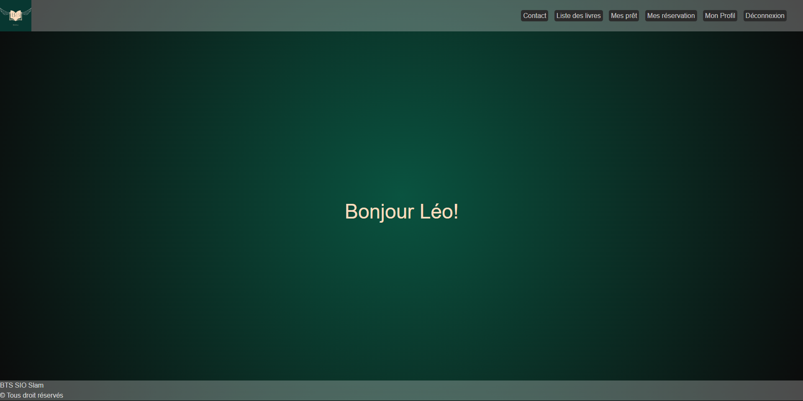
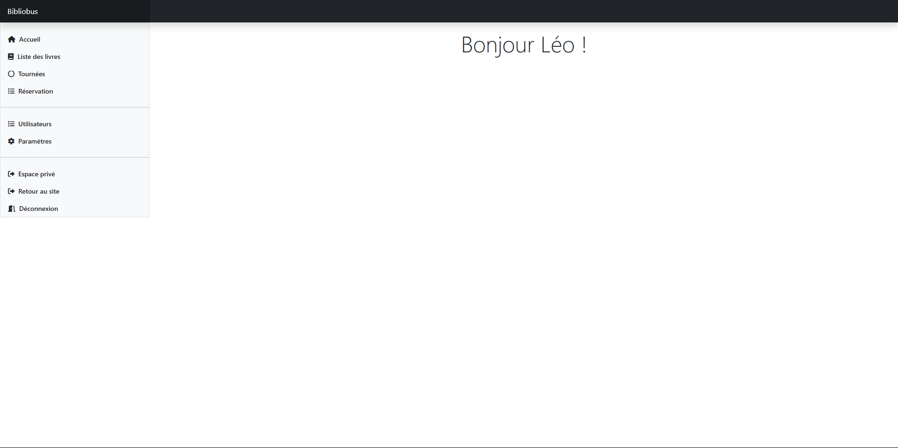

Captures — Application Web

Cette page est l'écran d'accueil pour les utilisateurs non connectés.
On y retrouve les principales options publiques telles que l'inscription avec les tarifs ou la connexion. Si l'utilisateur a perdu son mot de passe, il peut lancer une procédure de réinitialisation qui lui enverra un email sécurisé contenant un lien de changement de mot de passe.
Cette interface de départ permet de sécuriser l'accès aux fonctions réservées et de guider efficacement les nouveaux utilisateurs.

Voici l'interface d'accueil d'un utilisateur connecté.
L'utilisateur a désormais accès à de nouvelles fonctionnalités : consulter la liste des livres, effectuer des réservations, suivre ses prêts, et accéder à son profil personnel. Il peut également contacter le support via un formulaire.
L'interface est pensée pour permettre à l'usager de gérer son expérience dans la bibliothèque de manière simple et efficace.

Cette capture montre l'accueil d'un administrateur.
En plus des fonctionnalités classiques d'un utilisateur, l'admin dispose d'un accès à un espace d'administration. Il peut y gérer les utilisateurs, les livres, les réservations ou les tournées.
Cette séparation des droits garantit une application sécurisée, avec des droits spécifiques à chaque rôle. Le back-office admin permet de piloter l'ensemble de la base et les opérations critiques de la plateforme.